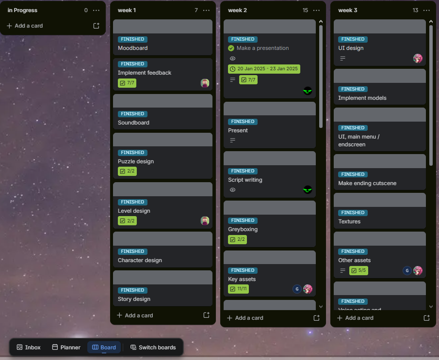

Video Game, Group project
Spooky House
After a kid runs away from his bullies and enters an abandoned house, he passes out. When he wakes up, he finds three ghosts staring at him while he is lying in a stranger's bed. Who are these ghosts, and can he find a way out?

About the Project
Spooky House is a puzzle/story game with interactive characters.
There were some specific requirements for this school project. In this case, all the assets had to be self-created.
My Contribution
- Character design (background and personality)
- Story design
- Scriptwriting
- Voice acting
Project Details
Role
Team Lead, Lead Designer and Voice Actor
Engine
Unity
Team Size
6 people
Duration
3 weeks
Development Process
See below for some screenshots and documents of the development process and their contributors.
As Spooky House was a group project, we needed a way to keep track of what everyone was working on and when tasks needed to be completed. To achieve this, we made use of Trello and its boards. We used a system where everyone had a set of tasks to complete each week throughout the three-week development process. At the end of each week, all tasks had to be completed. We also got together every two days to discuss our progress, problems and ideas. In the end, we managed to finish the project smoothly without having to stress about unfinished tasks or running into unexpected issues.

The characters are a core part of Spooky House. Since these characters were essentially the main point of interaction in the game, they had to be well thought out. I wrote out their personalities, their flaws, why they were still roaming the house, and what kind of interactions they would have with the player. In total, six characters were developed, of which three were chosen for the final game. The final characters in the game were: - Frank - Charlie - Harry
Below, you can find the script for the characters' voice lines. These were all written by me.
Voice acting was another big part of Spooky House. As one of the scriptwriters and a voice actor myself, I was also tasked with helping the others get their lines right and making sure the dialogue felt emotionally appropriate. This meant I was constantly providing feedback on their recordings. Unfortunately, we were unable to record everything in person due to the different locations we were living in. However, we still managed to get all the lines recorded and sent to the sound editor in our group.
Reflecting on it now, it would have been smarter to record all the lines in the same place. We ran into the issue of different volume levels for each character due to the use of different microphones. This also wasn't communicated to our sound designer, which resulted in some characters being very quiet and others being very loud in the final product.
Final Result
In the end, we had a lot of fun creating Spooky House.
I learned how to work closely with people in different roles to make sure the project ran smoothly as the team lead. I also really enjoyed working together with Ynse to create the characters and story of our game.
I had great fun recording and directing others during the voice recording sessions.
Looking back, there are still some areas for improvement, such as making the voice lines and their sound levels more consistent throughout the game.
However, I think that, considering it was a three-week project, we did pretty well.